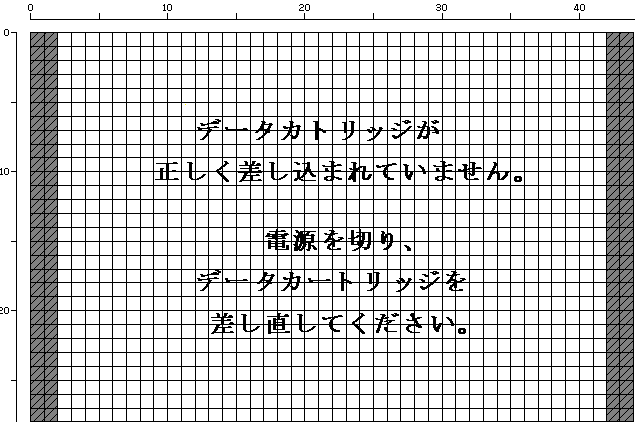

★INDEX
▲
|STN-43
|STN-44
|STN-45
|STN-46
|STN-47
|STN-48
|STN-49
▼
★INDEX
▲
|STN-43
|STN-44
|STN-45
|STN-46
|STN-47
|STN-48
|STN-49
▼
発行番号： | STN-46 | ||||||
|---|---|---|---|---|---|---|---|
発 行 日： | 96/05/08 | ||||||
メディア： | ●共 通 | ○CD-ROM | ○カートリッジ | ○その他 | |||
関 連： | ○プログラム | ●ハード | ○マニュアル | ○ツール | ○ゲーム | ○バグ | ○その他 |
情報区別： | ●新 規 | ○変 更 | ○追 加 | ||||
重 要 度： | ●厳 守 | ○推 奨 | ○参 考 | ○その他 | |||
添付資料： | ●無 | ○有 | |||||
件名補足： | |||||||
０ | １ | ２ | ３ |
４ | ５ | ６ | ７ |
８ | ９ | Ａ | Ｂ |
Ｃ | Ｄ | Ｅ | Ｆ | |
|---|---|---|---|---|---|---|---|---|---|---|---|---|---|---|---|---|
| 00H | +00H:ハードウェア識別子 | |||||||||||||||
| 10H | +10H:メーカーＩＤ | |||||||||||||||
| 20H | +20H:商品番号 |
+2AH:バージョン番号 | ||||||||||||||
| 30H | +30H:リリース年月日 |
+38H:デバイス情報 | ||||||||||||||
| 40H | +40H:対応エリアシンボル |
+4AH:バックアップRAM情報 | ||||||||||||||
| 50H | SEGA RESERVED 注1 | |||||||||||||||
| 60H | +60H:ゲーム名 | |||||||||||||||
| 70H | ||||||||||||||||
| 80H | ||||||||||||||||
| 90H | ||||||||||||||||
| A0H | ||||||||||||||||
| B0H | ||||||||||||||||
| C0H | ||||||||||||||||
| D0H | SEGA RESERVED | |||||||||||||||
| E0H | SEGA RESERVED |
+E4H:CHECK SUM |
SEGA RESERVED | |||||||||||||
| F0H | SEGA RESERVED | |||||||||||||||
| Ｒ | ：ＲＯＭ |
| Ｓ | ：ＳＲＡＭ |
| Ｄ | ：ＤＲＡＭ |
| Ｆ | ：ＦＲＡＭ |
| Ｊ | ：日本 |
| Ｔ | ：アジアNTSC(台湾、フィリピン、韓国) |
| Ｕ | ：北米地域(アメリカ、カナダ)、中南米NTSC(ブラジル) |
| Ｅ | ：ヨーロッパPAL、東南アジアPAL、中南米PAL |
 |
CS1は、BOOT ROMの設定している 1FF0H のままにしてください。 |
|
アドレス+000H〜+0FFHはSYSTEM IDエリアに入るため計算対象には入れません。 |

★INDEX
▲
|STN-43
|STN-44
|STN-45
|STN-46
|STN-47
|STN-48
|STN-49
▼